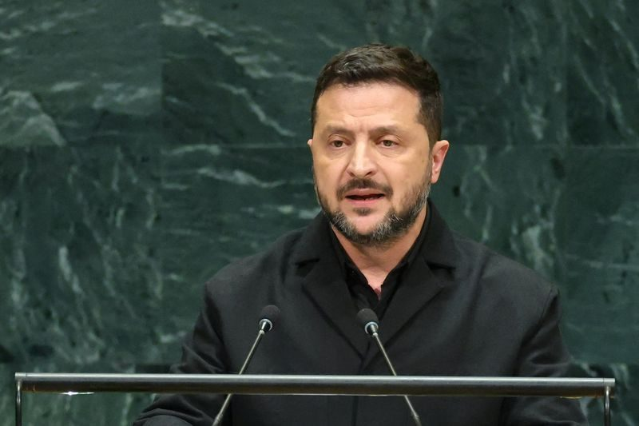

Putin: ‘all weapons’ if West threatens Kaliningrad
1–2 Oct 2026
ABC / Reuters: At the Valdai Forum, Vladimir Putin said the world is in a dangerous moment and warned NATO not to threaten Russia’s Baltic exclave — repeating that Moscow would use all weapons, including nuclear, if Kaliningrad or other Russian territory were attacked. NATO had received a Russian note on the same line; Secretary General Mark Rutte called nuclear threats unhelpful and stressed the alliance is defensive.
Open ABC
Russian drones hit Kyiv school and nuclear research grounds
1–2 Oct 2026
ABC: Jet-powered drones struck a Kyiv school and the grounds of a nuclear research facility (fire, test reactor undamaged per Ukraine’s nuclear safety watchdog). The Southern Bridge support section was also hit. The wave follows Wednesday’s energy-infrastructure opening salvo of the winter pressure campaign.
Open ABC
US sends ~9,000 troops to Middle East as Trump floats Iran strikes
1–2 Oct 2026
AP / India Today: Roughly 9,000 sailors and Marines are deploying on warships, taking the regional US naval footprint above 20,000 with hundreds of aircraft. Trump said early indications link Iran to the Flydubai co-pilot stabbing and kept open “possible” fresh strikes on Iran after the Nov 3 election.
Open India Today

Ukraine: FP-7 tactical ballistic missile used in combat
1 Oct 2026
Reuters / Star: Zelenskyy said Ukraine’s FP-7 short-range ballistic (~200 km) saw its first combat use — “Thank you for the result. Next — production.” Target and location undisclosed. Maker Fire Point also pitches it toward Europe’s Freyja anti-ballistic track.
Open The Star
Bakuna Eskwela: DOH–DepEd school immunization rolls out
1 Oct 2026
Inquirer (Bukidnon launch desk): Nationwide School-Based Immunization opened with MR and Td for consenting Grade 1 and 7 learners; HPV for Grade 4 girls follows next week. Parent ops: no jab without signed consent — treat the school form as notification, not a waiver, and check the schedule with the adviser before assuming your child’s cohort is done.
Open Inquirer
School threat scare: Benilde, DLSU-D, Mapúa Laguna send students home
1 Oct 2026
Daily Tribune: De La Salle-College of Saint Benilde suspended afternoon classes after a security threat; DLSU-Dasmariñas and Mapúa Malayan Colleges Laguna also shifted or cleared campuses while police swept. Parent ops: treat LGU/school channels as source of truth — not the group-chat rumor — and keep pickup plans current when threat notices hit mid-day.
Open Tribune
US bipartisan bill would fund nationwide school cellphone bans
1 Oct 2026
Washington Post: A bipartisan measure would push state cellphone bans in schools with enforcement tools and funding. Desk read for PH parents watching US district moves: the fight is moving from personal phones to school-issued device limits and “passive” screen time — same lane as last week’s LAUSD caps.
Open Washington Post
Asiad board: Eala bronze; Cojuangco archery silver; haul climbs
1–2 Oct 2026
Philstar / GMA: Alex Eala took women’s singles bronze after falling to China’s Wang Xiyu 6-3, 3-6, 2-6 in the semis. Amaya Cojuangco added compound archery silver; Juliana Candelaria took taekwondo silver as Team PH’s medal count pushed past 20, still led by Carlos Yulo’s two gymnastics golds and EJ Obiena’s vault gold.
Open Philstar
Paalam vs Yamaguchi for 55kg gold — 16-year boxing drought on the line
2 Oct 2026
Philstar / Manila Times: Carlo Paalam meets Japan’s Rui Yamaguchi in today’s men’s 55kg final (~12:45 PH). ABAP’s Marcus Manalo cites Paalam’s speed and experience; a win would end PH boxing’s 16-year Asian Games gold drought and stack a fourth gold behind Yulo (2) and Obiena.
Open Philstar
Crew-13 launches on Dragon Grace for a six-month ISS tour
1 Oct 2026
NASA / NPR / Spaceflight Now: Falcon 9 lofted Watkins, Delaney, Kutryk, and Teteryatnikov from Cape Canaveral at 11:10 a.m. EDT after an oxidizer-leak delay. Docking was targeted about eight hours later for biomedical, crop, and crew-health research across a ~six-month increment.
Open NASA
Apple testing screenless Whoop-like fitness band
22 Sep–2 Oct 2026
MacRumors / Yahoo: Apple is prototyping a fabric-strap, sensor-module band aimed at recovery and continuous metrics — the Whoop/Garmin CIRQA lane — with no ship commitment and a likely 2028-or-later window if it clears. Desk take: the screenless training band category is now crowded enough that Apple is sampling hardware, not just Watch software.
Open MacRumors